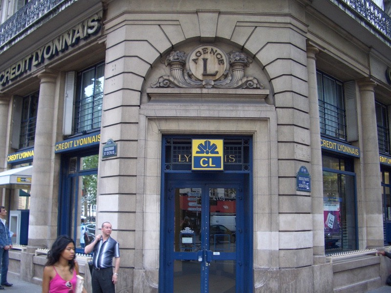

清晨五點多接到台灣來的電話，哥哥說包裹兩三天才會到，要我先在巴黎買來頂著。
早上八點半起床，半夢半醒的自己在床邊做起了國軍暖身操伸展肢體，洗把臉刷個牙。
拿著iBook去窗邊試試看無線網路的情況有沒有好一點，昨天上傳遊記到半夜十二點。
總是傳個幾十KB就斷線，照片一張都傳不上去，公眾免費的網路果然不太能期待呀∼
跨坐在窗台上，信號果然滿格，而且又偷連到了不知道是誰家的網路，上傳超快。
就這樣把25/26日的照片給補上了。
卸下車上的包包，騎著輕便的FCR1，恢復它跑車高速的本色。
九點半開始到巴黎閒晃，雖然有一整天的時間，但今天有幾個重要工作要完成。
1.身上的現金只剩下100歐元左右了，能用兩天多一點而已，得去兌換旅行支票。
2.找家單車店，買內胎、外胎，順便看看有沒有合用的貨架。
到巴黎的前兩天，到處亂騎也看到了幾家Thomas Cook的店面，現在認真的要找一家卻找沒有。
雖然我一直懷疑Thomas Cook並不是那個銀行的Thomas而是旅行社。
可是不驗證一下也不知道事實是怎麼回事。
騎了一個小時，繞了半圈巴黎，一無所獲，倒是看到了一家買蘋果的店。
同時肚子也咕嚕咕嚕的叫了，順道買了一個三明治當早餐。
口味好多呀，選一個夾有火腿、馬鈴薯沙拉、生菜的三明治，3.8歐元。
（我當初怎麼會那麼笨去吃2.3歐元的陽春鮪魚三明治呢？？）
後來總算看到了一家Thomas Cook，進去一問，他們果真如所料的，是一家不折不扣的旅行社！
沒事名字取的那麼像做什麼呀 @@" ？ 找了那麼久，結果是旅行社。
好加在沒有白忙一場，店員說要換旅支的話，隔壁的隔壁就有兌換處。
出門一看，果然有一個大大的螢光燈招牌寫著『CHANGE』。
裡頭有點像當鋪，鐵欄杆跟厚厚的玻璃隔著店員跟顧客，很怕被搶的緣故吧。
聽說兌換旅支要收手續費，有人拿100歐元的旅支去換，只拿回97歐元，當場虧3%。
小錢可不能就這麼輕易的被損耗了，雖然我一度很鋪張的過日子，但這次也是舉債出國玩，
不節儉一點怎麼行呢？回國後只怕要吃上一年的白土司配開水了∼
進入兌換處後，比手畫腳加上破英文+爛法文。
『如果．我．給你．100歐元．的旅支．我．可以．拿回．多少？』
『95歐元，其中5歐元是手續費。』
『.........................謝謝，我不換。（心中起碼問候了他祖宗十八代）』
『稍等一下，請問你是日本人嗎？』
『我？NO，挖係台灣郎。（他們真的聽的懂台語）』
『喔∼！台灣！請問一下，中文的CHANGE要怎麼寫？』
敢請做不成我的生意，還想賺其他台灣人的錢是吧？
CHANGE翻譯成『匯兌』應該比較恰當，可是翻成『換錢』又比較白話，仔細思考了一下之後。
我在他遞過來的紙筆上面，用中文工整的寫了兩個大大的中文字。
『黑店』
相當滿意的交給他，他看了也滿意的微笑點點頭。
那還等什麼？牽了車快跑呀∼∼！！！就等著看他會不會拿去作成招牌掛在店門口吧。
中午十一點，巴黎快被我繞一圈了，看到一家CL銀行，門口貼著一張紙寫著『NO CHANGE』。
歹勢，我看不懂英文，硬是推開門進去問了一下能不能換旅支。

答案是可以換的，那再問我給你100歐元旅支，我可以換回多少呢？
『100歐元呀∼！』
喔∼YES！免手續費！CL我愛死你了！一個人一天兌換的上限是500歐元。
那就先換500吧，口袋瞬間又是麥克麥克，回去又要開始藏錢了。
換旅支還挺專業的，要察看護照才給換，當然現場簽名是不可少的。
今天的兩項工作之一已經完成，但是還是沒找著腳踏車店。
在巴黎看一場電影的代價是450元台幣。超貴的呀∼∼！
一直到將近十二點的時候，才在巴黎南部靠近蒙帕那斯大廈附近找到一家巴黎單車行。
考考你，內胎跟外胎的英文怎麼講？疑∼不會了吧？其實我也不會。
指著輪胎，IN和OUT都要，OUT要堅固的（捶兩下地板），耐磨的（指著店裡的越野車胎）。
店員拿了MAXXIS 700X23C』120PSI的外胎給我，
黃色的雖然有點騷包，但他豎起大拇指說這個讚！很貴，所以讚！
很貴？多少錢一條呀 @@" 剛剛才換的歐元，不會全都要失血在這裡了吧？
答案是一條24歐元，台幣不到一千元，蠻公道的價錢，甚至可以說是便宜。
同款式的拿了兩條，再來就是內胎，一條4.5歐元，小貴，但也還能接受，買了五條。
貨架店裡面沒有我車子可以用的款式，店員看了看貨架搖晃的情況，用了束帶幫我加強。
然後說這樣應該沒問題，不要負重太誇張的話，可以撐下去的。
店裡面也有賣Giant的車子，我看到了滿倉庫的紙箱，心中大喜∼﹗ *^^*
問說如果我有需要的話，50天之後能不能過來拿紙箱裝車子呢？
店員說沒問題，有需要儘管過來拿吧，店裡多的是，但累積到一定數量就會拿去回收。
趕緊請他們在巴黎地圖上標出車店的所在位置，以免下次來就找不到了。
外胎24X2+內胎4.5X5，去掉零頭，實拿70歐元，比預估的便宜許多。
看來換了輪胎之後，FCR1又可以健步如飛了∼∼
騎著車奔回旅館的路上，巴黎陷入瘋狂大塞車。
出動了一堆的警察在各個路口，男的、女的、胖的、瘦的、白的、黑的，全體出動。
但還是塞的一踏糊塗，腳踏車勉強走人行道還能移動，街上喇叭聲四起，宛如台北街頭。
此時此刻，巴黎下起雨了，而且一下就是下大雨，完全沒有毛毛雨的心理準備。
今天是輕裝旅行，除了相機、錢包、iPod，什麼都沒帶，淋著雨騎車趕快回旅館。
幸好出門前有把旅館的位置標記在地圖上，要是找不到的話，全部的行李就送給旅館了。
十二點半，買了奇怪口味的披薩跟大瓶的可口可樂。
披薩3歐元，雖然不是現做的，但買了後店員會拿去烤箱加熱。
小瓶的汽水1歐元，大瓶的可口可樂只要2歐元，怎麼想都是買大瓶的比較划算，可以慢慢喝。
午餐就花五歐元，冒著雨買回房間裡慢慢享用。
外頭雨勢不減，下午出去逛的興致也沒了，就在房間裡把FCR1整修整修吧，還有更新中文化發佈。
花了一點時間把累積的中文化給更新，辛苦了台灣的中文化作者。
這是今天買的東西，五條內胎（黑盒子裝的）、兩條外胎。
先從分解FCR1的輪子開始，然後拆下內胎、外胎。
將折疊的外胎恢復彈性之後
裝上外胎
跟內胎
再打氣就大功告成啦∼！
同樣的動作重複兩次即可。
噹噹！黃色輪胎的FCR1。看起來整個感覺都不太一樣了呢 ^^"
去路上跑了幾圈，只能用健步如飛、生龍活虎、十八羅漢、天天開心來形容。
歡迎FCR1重新加入辛苦的環法旅行。
晚上八點，收拾行李從一星旅館中撤退，今晚改去『健康監獄』過夜。
晚餐吃獄方的伙食，味增小熱狗番茄烏龍麵，中國犯人附贈筷子一雙，算是很人道的待遇。
明天要再巴黎多待一天，要去參觀馬利歐的水管工廠-龐畢度中心。
Bonne nuit∼！